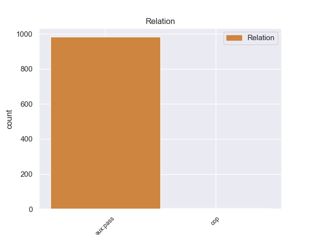
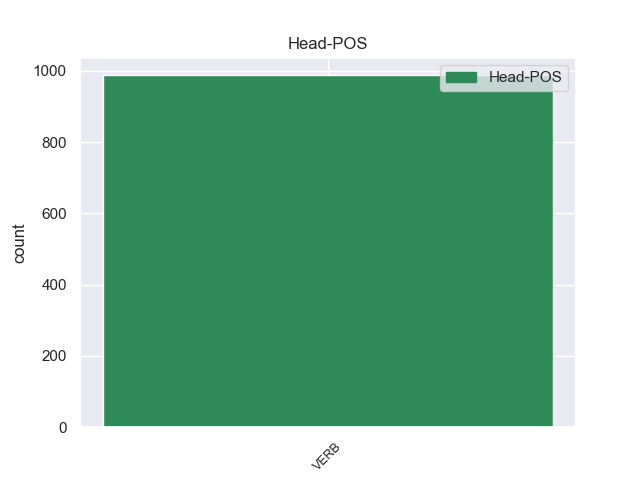
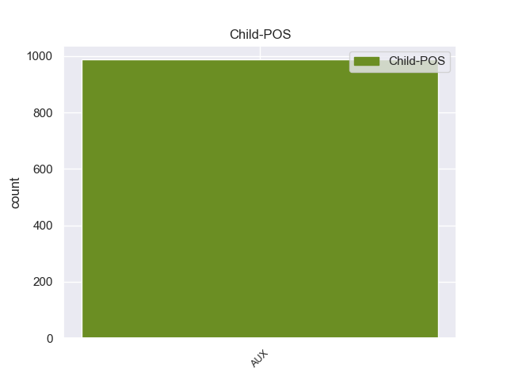

Distribution of features within this leaf



Agreement Rules sorted by frequency.
- When the dependent token is the passive auxiliary(aux:pass) of the head token, and the head token is VERB and the dependent token is AUX.
1 Весь _ _ _ _ 0 _ _ _
2 лес _ _ _ _ 0 _ _ _
3 был быть AUX _ Aspect=Imp|Gender=Masc|Mood=Ind|Number=Sing|Tense=Past|VerbForm=Fin|Voice=Act 4 aux:pass 4:aux:pass _
4 населен населить VERB _ Aspect=Perf|Gender=Masc|Number=Sing|Tense=Past|Variant=Short|VerbForm=Part|Voice=Pass 0 _ _ _
5 голосами _ _ _ _ 0 _ _ _
6 прошлого _ _ _ _ 0 _ _ _
7 , _ _ _ _ 0 _ _ _
8 и _ _ _ _ 0 _ _ _
9 я _ _ _ _ 0 _ _ _
10 впервые _ _ _ _ 0 _ _ _
11 с _ _ _ _ 0 _ _ _
12 ошеломляющей _ _ _ _ 0 _ _ _
13 силой _ _ _ _ 0 _ _ _
14 ощутил _ _ _ _ 0 _ _ _
15 , _ _ _ _ 0 _ _ _
16 как _ _ _ _ 0 _ _ _
17 много _ _ _ _ 0 _ _ _
18 пробыл _ _ _ _ 0 _ _ _
19 на _ _ _ _ 0 _ _ _
20 этом _ _ _ _ 0 _ _ _
21 свете _ _ _ _ 0 _ _ _
22 и _ _ _ _ 0 _ _ _
23 что _ _ _ _ 0 _ _ _
24 прожитое _ _ _ _ 0 _ _ _
25 - _ _ _ _ 0 _ _ _
26 это _ _ _ _ 0 _ _ _
27 не _ _ _ _ 0 _ _ _
28 разбег _ _ _ _ 0 _ _ _
29 для _ _ _ _ 0 _ _ _
30 взлета _ _ _ _ 0 _ _ _
31 в _ _ _ _ 0 _ _ _
32 какую-то _ _ _ _ 0 _ _ _
33 будущую _ _ _ _ 0 _ _ _
34 , _ _ _ _ 0 _ _ _
35 настоящую _ _ _ _ 0 _ _ _
36 жизнь _ _ _ _ 0 _ _ _
37 , _ _ _ _ 0 _ _ _
38 что _ _ _ _ 0 _ _ _
39 это _ _ _ _ 0 _ _ _
40 уже _ _ _ _ 0 _ _ _
41 жизнь _ _ _ _ 0 _ _ _
42 , _ _ _ _ 0 _ _ _
43 в _ _ _ _ 0 _ _ _
44 которой _ _ _ _ 0 _ _ _
45 все _ _ _ _ 0 _ _ _
46 связано _ _ _ _ 0 _ _ _
47 : _ _ _ _ 0 _ _ _
48 далекое _ _ _ _ 0 _ _ _
49 прошлое _ _ _ _ 0 _ _ _
49.1 _ _ _ _ _ 0 _ _ _
50 с _ _ _ _ 0 _ _ _
51 настоящим _ _ _ _ 0 _ _ _
52 , _ _ _ _ 0 _ _ _
53 а _ _ _ _ 0 _ _ _
54 если _ _ _ _ 0 _ _ _
55 мне _ _ _ _ 0 _ _ _
56 суждено _ _ _ _ 0 _ _ _
57 будущее _ _ _ _ 0 _ _ _
58 , _ _ _ _ 0 _ _ _
59 то _ _ _ _ 0 _ _ _
60 и _ _ _ _ 0 _ _ _
61 оно _ _ _ _ 0 _ _ _
62 окажется _ _ _ _ 0 _ _ _
63 нерасторжимо _ _ _ _ 0 _ _ _
64 связанным _ _ _ _ 0 _ _ _
65 с _ _ _ _ 0 _ _ _
66 пережитым _ _ _ _ 0 _ _ _
67 ; _ _ _ _ 0 _ _ _
1 То _ _ _ _ 0 _ _ _
2 есть _ _ _ _ 0 _ _ _
3 здесь _ _ _ _ 0 _ _ _
4 в _ _ _ _ 0 _ _ _
5 основе _ _ _ _ 0 _ _ _
6 - _ _ _ _ 0 _ _ _
7 четкий _ _ _ _ 0 _ _ _
8 классовый _ _ _ _ 0 _ _ _
9 подход _ _ _ _ 0 _ _ _
10 , _ _ _ _ 0 _ _ _
11 который _ _ _ _ 0 _ _ _
12 был быть AUX _ Aspect=Imp|Gender=Masc|Mood=Ind|Number=Sing|Tense=Past|VerbForm=Fin|Voice=Act 13 cop 13:cop _
13 определяющим определять VERB _ Aspect=Imp|Case=Ins|Gender=Masc|Number=Sing|Tense=Pres|VerbForm=Part|Voice=Act 0 _ _ _
14 в _ _ _ _ 0 _ _ _
15 ходе _ _ _ _ 0 _ _ _
16 репрессий _ _ _ _ 0 _ _ _
17 по _ _ _ _ 0 _ _ _
18 " _ _ _ _ 0 _ _ _
19 кулацкой _ _ _ _ 0 _ _ _
20 операции _ _ _ _ 0 _ _ _
21 " _ _ _ _ 0 _ _ _
22 НКВД _ _ _ _ 0 _ _ _
23 в _ _ _ _ 0 _ _ _
24 1937 _ _ _ _ 0 _ _ _
25 - _ _ _ _ 0 _ _ _
26 1938 _ _ _ _ 0 _ _ _
27 гг _ _ _ _ 0 _ _ _
28 . _ _ _ _ 0 _ _ _
Disagree Examples:
1 Как _ _ _ _ 0 _ _ _
2 уже _ _ _ _ 0 _ _ _
3 говорилось _ _ _ _ 0 _ _ _
4 , _ _ _ _ 0 _ _ _
5 в _ _ _ _ 0 _ _ _
6 1980 _ _ _ _ 0 _ _ _
7 году _ _ _ _ 0 _ _ _
8 на _ _ _ _ 0 _ _ _
9 заседании _ _ _ _ 0 _ _ _
10 МОК _ _ _ _ 0 _ _ _
11 , _ _ _ _ 0 _ _ _
12 во _ _ _ _ 0 _ _ _
13 время _ _ _ _ 0 _ _ _
14 проведения _ _ _ _ 0 _ _ _
15 Олимпийских _ _ _ _ 0 _ _ _
16 Игр _ _ _ _ 0 _ _ _
17 в _ _ _ _ 0 _ _ _
18 Москве _ _ _ _ 0 _ _ _
19 , _ _ _ _ 0 _ _ _
20 была быть AUX _ Aspect=Imp|Gender=Fem|Mood=Ind|Number=Sing|Tense=Past|VerbForm=Fin|Voice=Act 21 aux:pass 21:aux _
21 принято принять VERB _ Aspect=Perf|Gender=Neut|Number=Sing|Tense=Past|Variant=Short|VerbForm=Part|Voice=Pass 0 _ _ _
22 решение _ _ _ _ 0 _ _ _
23 о _ _ _ _ 0 _ _ _
24 признании _ _ _ _ 0 _ _ _
25 синхронного _ _ _ _ 0 _ _ _
26 плавания _ _ _ _ 0 _ _ _
27 олимпийским _ _ _ _ 0 _ _ _
28 видом _ _ _ _ 0 _ _ _
29 спорта _ _ _ _ 0 _ _ _
30 . _ _ _ _ 0 _ _ _